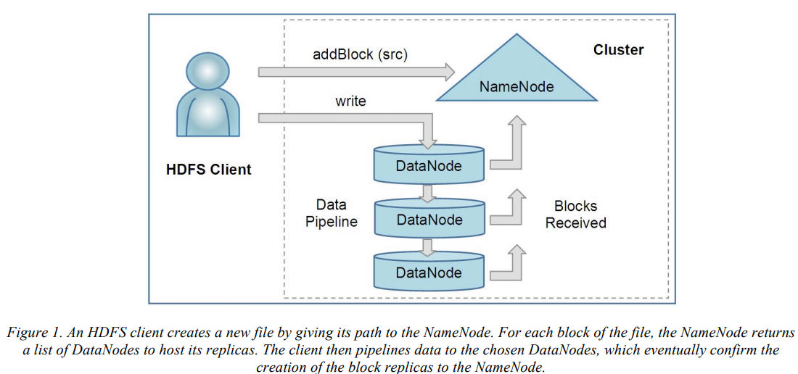
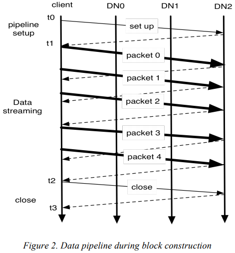

@MSST'10 @Introduction
The Hadoop Distributed File SystemSummaryHDFSArchitectureHDFS ClientFile I/O Operations and Replica ManagementData PipelineBlock PlacementPractice at YahooFuthre Work
Motivation of this paper:
This paper describes the architecture of HDFS and reports on experience of using HDFS to manage 25 petabytes of enterprise data at Yahpp.`
- NameNode: store metadata on a dedicated server
- DataNode: store application data on other servers
All servers are fully connected and communicate with each other using TCP-based protocols.
Files and directories are represented on the NameNode by inodes (e.g., permissions, modification and access times, namespace and disk quotas)
The NameNode maintains the namespace tree and the mapping of file blocks to DataNode. A HDFS client firstly contacts the NameNode for locations of data blocks comprising the file and then reads block contents from the DataNode closest to the client.
- the data itself
- block's metadata including the checksums for the block data and the block's generation stamp
During the startup, each DataNode connects to the NameNode and preforms a handshake.
Purpose: verify the namespace ID and the software version
If either does not match that of the NameNode the DataNode automatically shuts down. After the handshake, DataNode registers with the NameNode.
storage ID is assigned to the DataNode when it registers with the NameNode for the first time and never chanegs after that.
NameNode uses replies to heartbeats to send instructions to the DataNodes.
HDFS client is a code library that exports the HDFS file system interface. (e.g., read, write, delete files, and operations to create and delete directories) 
When a client opens a file to read to , it fetches the list of blocks and the locations of each block replica from the NameNode.
HDFS implements a single-writer, multiple-reader model.
The HDFS client that opens a file for writing is granted a lease for the file, no other client can write to file.
The DataNodes form a pipeline, the order of which minimizes the total network distance from the client to the last DataNode.  Bold lines represent data packets, dashed lines represent acknowledge messages, thin lines represent control mesages to setup and close the pipeline.
When a DataNode registers with the NameNode, the NameNode runs a configured script to decide which rack the node belongs to.
- places the first replica on the node where the writer is located
- places the second and third replicas on two different racks.
This policy reduces the inter-rack and inter-node write traffic and generally improves write performance.
In this part, this paper demonstrates the configuration and data in Yahoo.
For benchmark, it uses DFSIO benchmark to measure average throughput for read, write and append operations.
DFSIO is an application available as part of the Hadoop distribution. It is designed to measure performance only during data transfer, and excludes the overheads of task scheduling startup, and the reduce task.
The NNThroughput benchmark:
it is a single node process which starts the NameNode application and runs a series of client threads on the same node.
Using BackupNode
their near-term solution to scalability is to allow multiple namespaces (and NameNodes) to share the physical storage within a cluster. the main drawback of multiple independent namespaces is the cost of managing them, especially, if the number of the namespaces is large.